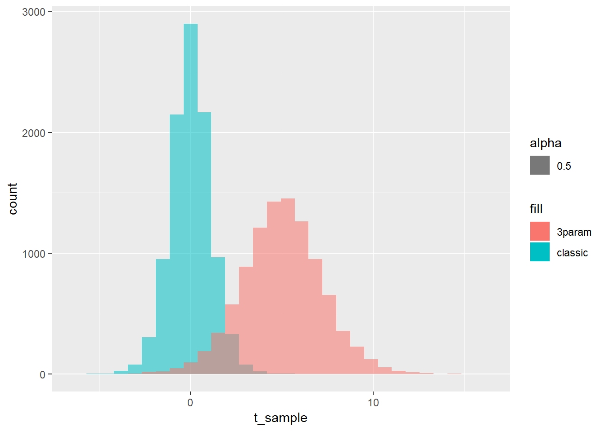

To relate this work to the WaveQTL supplementary material, define \(a := \mu\) and \(b := \sigma^2\).
The student’s t-distribution (one parameter, degrees of freedom) can be generalised to a three-parameter location-scale family:
\[ X = \mu + \sigma T\] or
\[ T = \frac{X - \mu}{\sigma}\] where \(\mu\) is a location parameter, \(\sigma\) is a scale parameter, and T is a random variable with the classic student’s t-distribution.
For more details, you can view: https://en.wikipedia.org/wiki/Student%27s_t-distribution#Generalized_Student's_t-distribution.
Hence, sampling from the 3-parameter t-distribution should be fairly straightforward - use R’s inbuilt functions to sample from the t-distribution, then scale by the other two parameters.
For example, take the following spec: \[ \nu = 10, \mu = 5, \sigma = 2 \]
num_samples = 10000
nu = 10
mu = 5
sigma = 2
t_sample <- stats::rt(n = num_samples, df = nu)
t_sample_3p <- mu+(sigma*t_sample)
hist(t_sample)hist(t_sample_3p)ggplot() +
geom_histogram(data = data.frame(t_sample),aes(x = t_sample, alpha = 0.5, fill = "classic")) +
geom_histogram(data = data.frame(t_sample_3p),aes(x = t_sample_3p, alpha = 0.5, fill = "3param"))## `stat_bin()` using `bins = 30`. Pick better value with `binwidth`.
## `stat_bin()` using `bins = 30`. Pick better value with `binwidth`.
Now we should verify that these samples somewhat represent the underlying distributions. For the standard t distribution, we should have (see the wiki): \[ E[T] = 0, V(T) = \frac{\nu}{\nu - 2}\]
mean(t_sample)## [1] 0.01051584var(t_sample); (nu)/(nu-2)## [1] 1.24876## [1] 1.25For the generalised t distribution, we should have (once again, see the wiki): \[ E[T] = \mu, (\nu > 1), \; V(T) = \sigma^2 \frac{\nu}{\nu - 2}, (\nu > 2)\]
mean(t_sample_3p); mu## [1] 5.021032## [1] 5var(t_sample_3p); sigma^2*(nu)/(nu-2)## [1] 4.995039## [1] 5